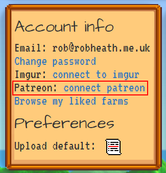
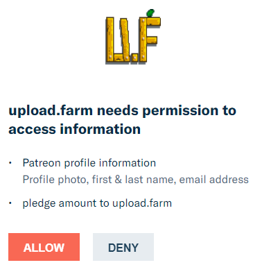
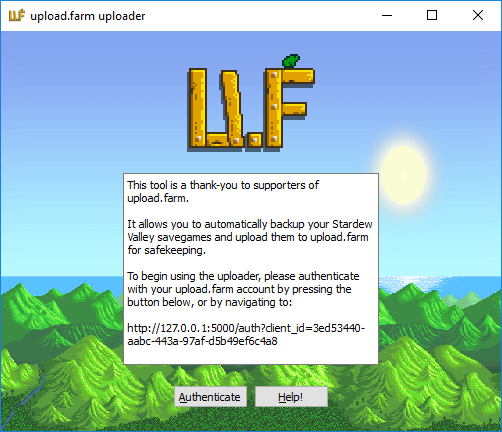
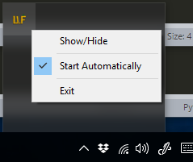

uploader help
Hello! Thank you for using the upload.farm Stardew Valley auto-uploader. This software is a thank-you gift for supporters of upload.farm.
Quick-start
First-time setup for a typical upload.farm supporter:
1: Press Authenticate on the uploader
2: Press Authorise on the browser window that appears (or log in and try step 1 again)
3: Use the 'Manual backup' button on the savegame(s) you're currently playing
4: Set the auto-backup and upload checkboxes
5: You're good to go! From now on, just check the uploader is running when you play Stardew Valley and everything should 'just work'.
Requirements
To use this tool you will need an upload.farm account, and access to the upload.farm API. Once you have your upload.farm account, unless you know otherwise, please connect your Patreon account in the Account page. This looks like this:


If successful, you should be redirected back to your Account page and see "Connected to Patreon!" displayed. Congratulations! Now let's set up the uploader.
Setting up

First, click the Authenticate button. Your web browser should open and ask you to authorise the application, which will look like this:

(If you arrive at the login page, please log in, then try the Authenticate button again.)
Click Authorise, and you should see:
at which point the uploader should have picked up your login credentials, and you're set!
If you see an error about not having API access, check 1. you have connected Patreon correctly, 2. you have an active Patreon pledge. If you click Authorise and nothing happens, check you haven't blocked the uploader from catching the login information with your computer's firewall!
Using the uploader
So now you're logged in, you should see the uploader's main window:

Here we have:
1: control panel. Quick links to your account page, to launch Stardew Valley (only works via Steam), to your backup directory, to log out of the uploader, to close the uploader, and to open this help document.
2: save information. The automatically-detected savegames in your Stardew Valley savegame folder, and the most recent in-game date the uploader backed up.
3: auto control. Check auto-backup to have the uploader automatically zip up your savegame when it's updated, to your computer. Check upload backups to have the uploader automatically send these zipped backups to upload.farm. The uploaded saves obey your upload.farm default account privacy setting, so if you have it set for new uploads to be unlisted, this will be honoured.
4: manual control. Press the button to manually backup your current savegame. As auto-backup only creates backups when the savegame is updated, it is worth manually backing up your savegames when you first run the tool. If upload backups is checked, manual backups will also be uploaded to upload.farm.
5: links. The latest URL for each savegame is displayed here - click it to have it open in your web browser.
The tray icon
So now you're logged in, you should see the uploader's main window:

The main window can be shown/hidden using "Show/Hide". If "Start Automatically" is checked, the uploader will run when Windows starts, ensuring your savegames are backed up/uploaded if you play Stardew Valley. Finally, use "Exit" to completely close the uploader.
privacy policy | source at GitHub
All Stardew Valley assets copyright Concerned Ape